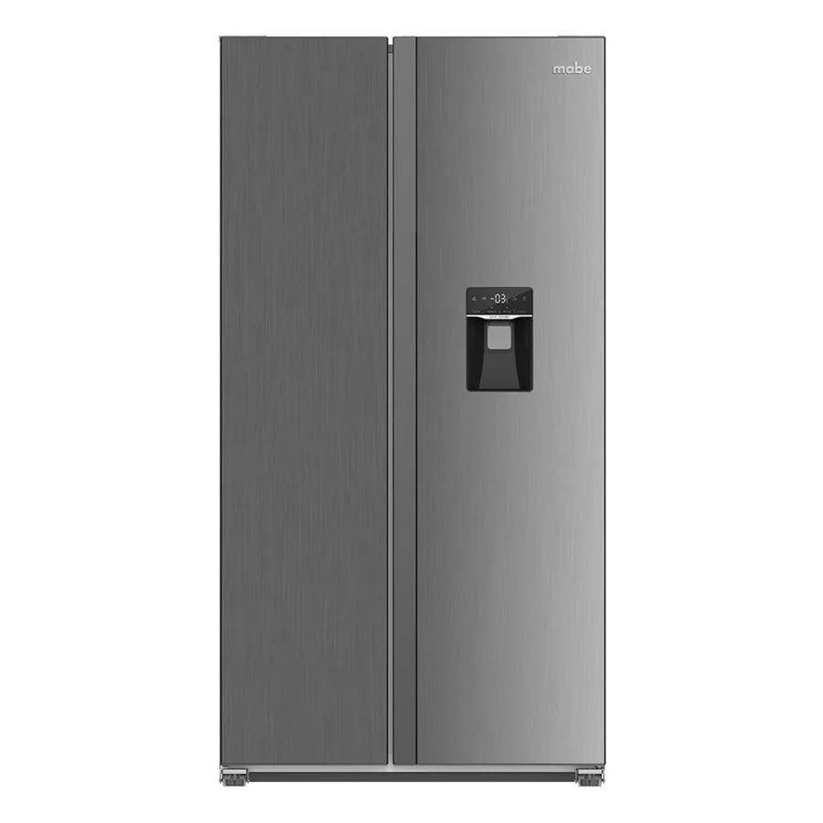

Qué suele estar pasando
Ventilador con hielo o desgastado, compresor que arranca con dificultad, o la nevera mal nivelada.
Nivel de atención: Revisar pronto
Qué puedes revisar tú
Un ruido nuevo y constante merece revisión: puede avisar una falla antes de que deje de enfriar.
Desconecta la refrigeradora antes de mover, limpiar o intentar abrir cualquier panel trasero. Si huele a quemado, desenchúfala y no la vuelvas a conectar.
Cuándo llamar al técnico
Conviene que lo revise un técnico en los próximos días. Si sigues usándolo con la falla, el problema puede crecer y la reparación salir más cara.
Qué hacemos en la visita
- Probamos el equipo y reproducimos la falla
- Identificamos la pieza o el sistema que la causa
- Te explicamos el diagnóstico y el costo antes de reparar
- Reparamos y probamos que quede funcionando
Datos que nos ayudan por WhatsApp
Envíanos marca y modelo (la etiqueta suele estar dentro, en el costado o en el techo del compartimento), cuánto tiempo lleva con la falla y si el congelador enfría o no. Si la falla hace ruido, huele o muestra un código, grábala en un video corto.
Guía detallada
Ruidos normales
Un zumbido suave del compresor, un clic al arrancar y el sonido del agua al descongelar son normales. Las neveras Mabe modernas suelen ser más silenciosas, pero también hacen ruidos de arranque.Ruidos que sí indican falla
- Zumbido fuerte constante: ventilador del evaporador con hielo o desgastado.
- Golpeteo o traqueteo: la nevera está mal nivelada o toca la pared.
- Chillido: motor del ventilador o rodamiento desgastado.
- Clic repetido sin arrancar: relé o arranque del compresor.
Qué puedes revisar
Verifica que las cuatro patas estén niveladas, que la nevera no toque la pared ni muebles, y que no haya objetos vibrando encima. Si el ruido viene del congelador, puede haber escarcha en el ventilador.Cuándo llamar
Si el ruido es nuevo, fuerte o va acompañado de poco frío, escríbenos por WhatsApp con el modelo y, si puedes, un video corto del ruido.Particularidades de Quito
Quito tiene cortes y bajones de voltaje ocasionales; un protector de voltaje con retardo ayuda a cuidar el compresor y la tarjeta electrónica.
Otras fallas de refrigeradora Mabe
- Refrigeradora Mabe: no enfría
- Refrigeradora Mabe: el congelador se llena de escarcha
- Refrigeradora Mabe: gotea agua dentro de la nevera
- Refrigeradora Mabe: el dispensador no saca agua
- Refrigeradora Mabe: no hace hielo o hace poco
- Refrigeradora Mabe: se enciende la luz del filtro
- Refrigeradora Mabe: se apaga y prende sola
- Refrigeradora Mabe: huele mal por dentro
Preguntas frecuentes
¿Puedo seguir usando la refrigeradora Mabe mientras tanto?
Puedes usarlo con precaución, pero conviene revisarlo pronto.
¿El técnico lo repara en mi casa en Quito?
Sí. Vamos a tu domicilio, diagnosticamos la falla y te damos el costo antes de reparar. Escríbenos por WhatsApp para coordinar.
¿Qué debo enviarte para que me orientes?
Marca y modelo, una descripción de la falla, tu barrio y, si puedes, una foto de la etiqueta y un video corto del problema.